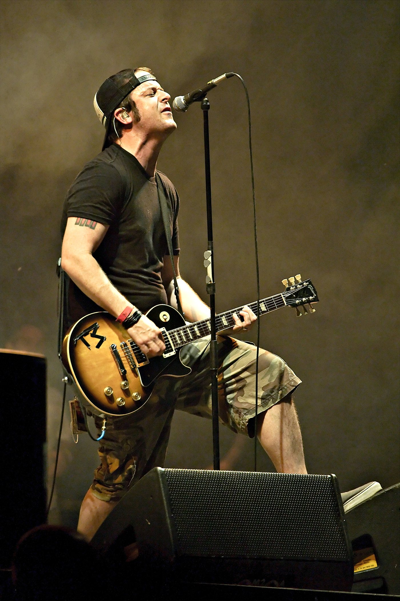

Kolumne
Tony Sly: Eigentlich hasse ich Nachrufe
Über Tony Sly, No Use For A Name, Skateboardschäden und Erinnerungen, die mehr sind als Kalenderpflicht.

Nachrufe funktionieren im Internet ziemlich zuverlässig.
Ein Schwarz-Weiß-Foto, ein Todestag, ein paar warme Worte - und schon freut sich der Alkoholrhythmus über ein paar zusätzliche Klicks. Genau deshalb kann ich mit diesen Pflichtübungen meistens wenig anfangen. Zu oft entsteht der Eindruck, dass der Verstorbene nur noch einmal aus der Schublade geholt wird, weil das Datum gerade passt.
Heute mache ich trotzdem eine Ausnahme.
Nicht, weil Tony Sly heute vor 14 Jahren, am 31. Juli 2012, gestorben ist. Sondern weil seine Musik lange vor diesem Tag einen festen Platz in meinem Leben hatte - und ihn bis heute nicht geräumt hat.
Jugend vertont
No Use For A Name gehörten neben Bad Religion, Propagandhi, Slime, Nirvana, Toxoplasma und Popperklopper zu den Bands, die meine Jugend vertont haben. Sie waren außerdem zumindest mittelbar an einem gebrochenen Schultergelenk und einem gebrochenen Ellenbogen beteiligt.
Natürlich könnte man behaupten, ich sei einfach zu dämlich zum Skateboardfahren gewesen. Aber wo bliebe da die Verantwortung der Musikindustrie?
The Daily Grind und ¡Leche con Carne! waren für mich mehr als zwei Punkrock-Platten mit unfassbar starken Artworks. Diese Songs waren Weckrufe. Musik zum Losfahren, Hinfallen, Aufstehen und Hinterfragen.
Wenn man damals auf dem Skateboard durch die Straßen rollte, fühlte sich das nach Freiheit an. Rückblickend war diese Freiheit wahrscheinlich nur bis zum nächsten Bordstein oder zur nächsten Mathestunde echt - aber genau so fühlte es sich an.
„Countdown“ und „Straight From the Jacket“ laufen bis heute regelmäßig durch meine Playlists. Nicht aus Nostalgie. Sondern weil sie auch nach über dreißig Jahren immer noch genau das auslösen, was sie damals ausgelöst haben.
Einfach da
Live habe ich No Use For A Name mit ziemlicher Sicherheit 1997 in der Zeche Carl in Essen gesehen. Das war damals für unsere Clique fast schon ein zweites Wohnzimmer. Dazu kamen praktisch alle Bizarre Festivals, auf denen sich die Band ebenfalls in mein Gedächtnis gespielt hat.
Einzelne Konzerte verschwimmen heute langsam miteinander - aber genau das ist vielleicht das schönste Kompliment. No Use For A Name waren nie das eine Konzert. Sie gehörten einfach zu dieser Zeit. Sie waren da.
Tony Sly war dabei weit mehr als nur Sänger einer Skatepunk-Band. Als Gitarrist und vor allem Songwriter schaffte er etwas, das nur wenigen gelang: Er verband Melodie, Melancholie, Wut und Hoffnung, ohne dass der Punkrock dabei weichgespült wirkte.
Gerade auf den späteren Alben und seinen Solo-Veröffentlichungen zeigte sich, wie vielseitig dieser Mann schreiben konnte.
Zu früh
Am 31. Juli 2012 starb Tony Sly völlig unerwartet im Alter von 41 Jahren. Kein tragischer Mythos vom „Club 27“, kein künstlich aufgeblasenes Rockstar-Klischee. Einfach viel zu früh.
Nach seinem Tod wurde No Use For A Name nicht als normale Band weitergeführt. Eine Entscheidung, die ich bis heute nachvollziehen kann. Manche Bands kann man ersetzen. Manche Sänger auch. Tony Sly gehörte für mich nicht dazu.
Ich schreibe diesen Text also nicht, weil heute zufällig ein Todestag im Kalender steht.
Ich schreibe ihn, weil No Use For A Name mit dafür verantwortlich waren, dass ich damals angefangen habe, Dinge zu hinterfragen. Dass ich mich auf ein Brett mit vier Rollen gestellt habe. Dass ich mir dabei sämtliche Knochen krumm gefahren habe. Und weil diese Band auch Jahrzehnte später immer noch einen festen Platz zwischen meinen Schallplatten, CDs und Erinnerungen hat.
Vielleicht ist genau das der Unterschied zwischen einem Nachruf und einer Erinnerung.
Der Nachruf erinnert daran, wann jemand gestorben ist.
Die Erinnerung erklärt, warum er nie ganz verschwinden wird.
Quellencheck: Todestag, Alter und Einordnung als Sänger, Gitarrist und Songwriter von No Use For A Name sind unter anderem über Fat Wreck Chords, Los Angeles Times und Pitchfork gegengeprüft. Dass No Use For A Name nach Tony Slys Tod nicht regulär weiterliefen, wird unter anderem in einem Jaded-in-Chicago-Interview mit Erin Burkett über den späteren Tribute-Kontext nachvollziehbar. Das Foto stammt von Wikimedia Commons. Konzert- und Jugenderinnerungen sind persönliche Burg-Erinnerungen.